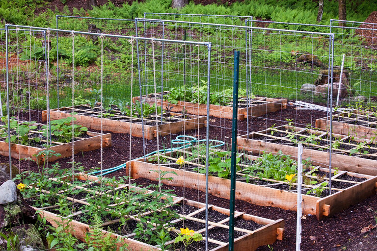
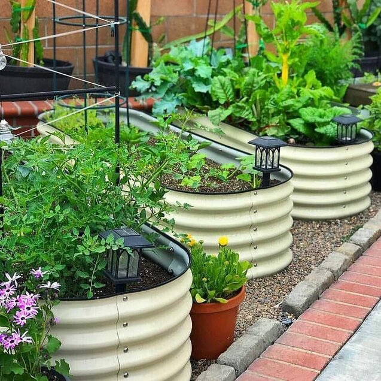

Home Gardening
Growing a simple vegetable garden has some great benefits. If you have a family, it can become a family activity that you can all share in the fruits of your labors. Besides knowing where your food is coming from, there are several great health benefits.
One thing to keep in mind is that the food in the stores has had to travel to the store, also it has to be stored so it is covered in preservatives to help keep it fresher longer while it is in the store. Also, being able to decide what fertilizer to use if you choose to use any at all.
By growing it yourself, you also are able to control when you harvest your food, this allows you to get food that is fresh and ready to go. The vegetables being fresh, sometimes being picked moments before being used, will have a cleaner and wholesome taste to them.
With the troubling times that our world faces today, money tends to be on the forefront of most adults minds, growing your own food is a much more cost-effective way to get groceries. A few things you can do with the excess is preserve it, or take it over to a neighbor and share with others.
